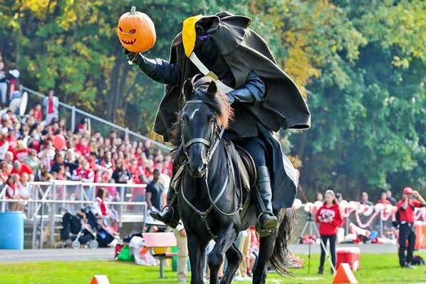

tarrytown
the Headless Horseman(Teal)
The duo comprise the Headless Horseman, the long-time Sleepy Hollow mascot.
Though the local high school has long held the name
the town of Sleepy Hollow only came into being in 1996, after residents of North Tarrytown voted to change the town's name.

Back to Index